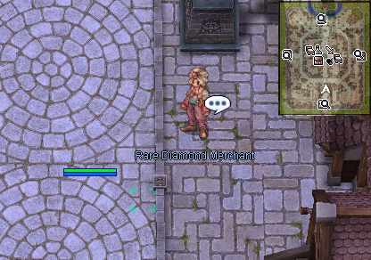
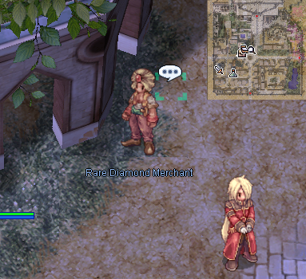
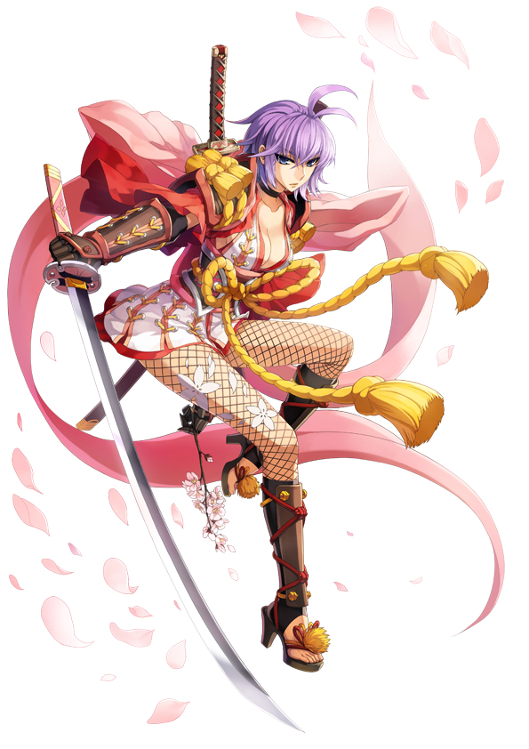
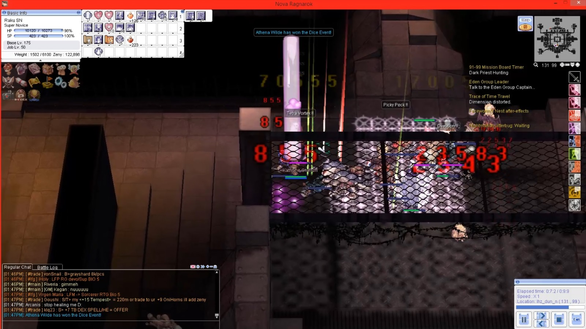
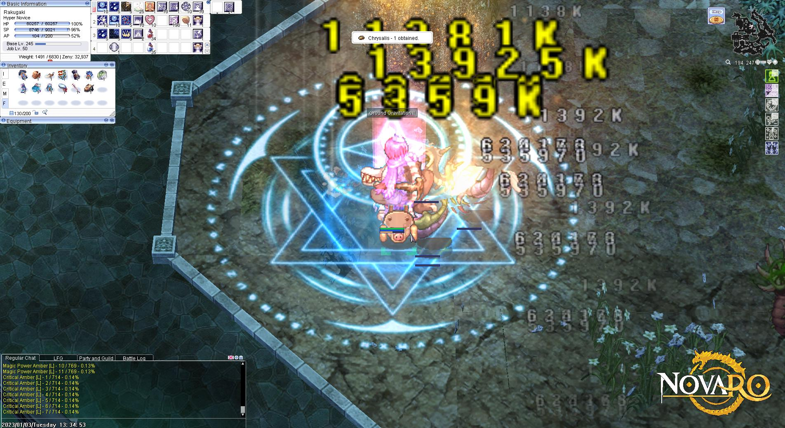
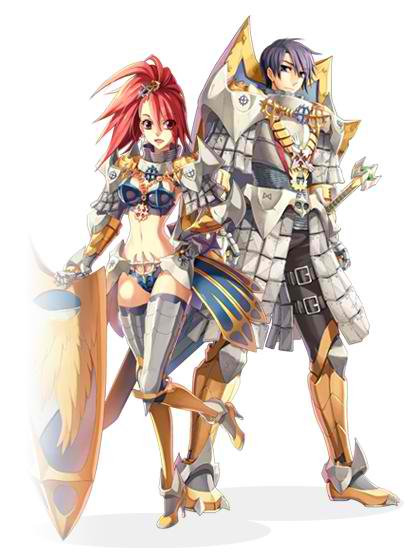

File list
This special page shows all uploaded files.
{kind=link}
{kind=link}
| Date | Name | Thumbnail | Size | User | Description | Versions |
|---|---|---|---|---|---|---|
| 05:25, 8 May 2019 | Sain.png (file) | 316 KB | Panic | 1 | ||
| 08:37, 2 September 2019 | LowRankAgent.png (file) |  |
316 KB | Hatsumei | 1 | |
| 20:13, 7 September 2016 | PatientVD.png (file) | 318 KB | Mayo | 1 | ||
| 05:32, 8 May 2019 | Will.png (file) |  |
318 KB | Panic | 1 | |
| 02:29, 2 November 2016 | StalkerPaintGuide.png (file) | 320 KB | VTours | 1 | ||
| 00:18, 17 September 2015 | Squest4.png (file) | 321 KB | AloeLeaflet | 1 | ||
| 19:12, 7 May 2019 | Mh logo sm.png (file) | 321 KB | Panic | 1 | ||
| 11:02, 10 January 2018 | Episode16-WaltherStep3.png (file) | 323 KB | Mallinock | 1 | ||
| 16:35, 7 September 2016 | GrizzlyVD.png (file) |  |
324 KB | Mayo | 1 | |
| 21:47, 8 October 2018 | AloeEvoLif.png (file) | 325 KB | AloeLeaflet | 1 | ||
| 20:01, 12 September 2016 | 17PRO.png (file) |  | 325 KB | Halves | 1 | |
| 01:42, 25 July 2018 | Miles.png (file) |  |
326 KB | Panic | Miles the Milliner | 1 |
| 09:51, 4 June 2021 | SpecicmenRecoveryScene.jpg (file) |  |
327 KB | Randomced859 | 1 | |
| 20:01, 12 September 2016 | 17RAC.png (file) |  | 329 KB | Halves | 1 | |
| 19:31, 7 September 2016 | MechaVD.png (file) | 330 KB | Mayo | 1 | ||
| 22:25, 18 October 2016 | Menblattbuild.png (file) | 331 KB | MaaChan | 1 | ||
| 16:51, 7 May 2018 | Character Oboro.jpg (file) |  | 331 KB | Ketalar | For a class guide being made. | 1 |
| 20:05, 5 July 2021 | Hooligan quest1.png (file) |  |
333 KB | I Know To Write | 1 | |
| 16:01, 23 April 2021 | SofLSorc.png (file) | 334 KB | Melzdash | 1 | ||
| 18:46, 9 April 2019 | Selimbig.png (file) | 335 KB | Panic | 1 | ||
| 20:29, 3 February 2016 | OGH 14.png (file) |  |
336 KB | Aristiel | 1 | |
| 20:48, 21 November 2019 | Ranger2png.png (file) |  |
336 KB | BlackIntels | Ranger in png format | 1 |
| 04:50, 8 May 2019 | Astrid.png (file) | 337 KB | Panic | 1 | ||
| 11:32, 4 September 2015 | EinbrochGSGuildArms.jpg (file) | 339 KB | Renata | The Gunslinger Weapon Shop inside Einbroch Gunslinger Guild | 1 | |
| 14:19, 20 September 2018 | Super Novice in Bio5.jpg (file) |  | 340 KB | G5457s | THERE HE BLOWS! KABOOM goes the Super Novice, courtesy of Warlock Kathryne's Tetra Vortex. | 1 |
| 05:40, 3 January 2023 | Mage HN AncientJupe3.jpg (file) |  | 341 KB | G5457s | 1 | |
| 18:45, 18 May 2017 | MW.png (file) | 342 KB | DualityDiscretion | 1 | ||
| 08:56, 13 May 2019 | SNsupport1.png (file) | 343 KB | G5457s | Example skills for SN Support Build. 1 | 1 | |
| 23:42, 6 October 2018 | Alche1.png (file) |  |
343 KB | AloeLeaflet | 1 | |
| 16:21, 19 August 2022 | Celine Spreadsheet 1.PNG (file) |  |
345 KB | HairyWizard | 6 | |
| 22:53, 9 March 2017 | Rgrg.png (file) |  | 362 KB | TheFruitSalad | 1 | |
| 20:13, 7 September 2016 | DocVD.png (file) | 366 KB | Mayo | 1 | ||
| 13:47, 25 August 2017 | TCPNoDelay regedit2.png (file) |  |
367 KB | Generic | 1 | |
| 01:48, 4 September 2015 | EdenHQ2F.jpg (file) | 368 KB | Renata | 1 | ||
| 06:29, 19 April 2022 | Miyu 4th class tree am.png (file) |  |
368 KB | Miyu | 1 | |
| 20:02, 21 February 2023 | PhysHN AncientJupe3.jpg (file) | 368 KB | G5457s | 1 | ||
| 05:19, 8 May 2019 | Delpi.png (file) | 370 KB | Panic | 1 | ||
| 12:21, 28 July 2018 | Painter.png (file) |  |
371 KB | Panic | 1 | |
| 18:03, 4 December 2018 | Aloewewwewe.png (file) | 372 KB | AloeLeaflet | 1 | ||
| 20:14, 18 May 2017 | MW5.png (file) | 375 KB | DualityDiscretion | 1 | ||
| 03:56, 1 December 2018 | Gear Swapping 1.jpg (file) | 376 KB | Hakumen | 1 | ||
| 14:23, 7 December 2017 | Santa1.png (file) | 377 KB | Tokeiburu | 1 | ||
| 05:32, 8 May 2018 | Distortedtrick.gif (file) | 378 KB | Ketalar | For a oboro guide. | 1 | |
| 14:55, 9 July 2020 | Ramboo.gif (file) | 378 KB | G00suede | 1 | ||
| 23:30, 8 October 2018 | PetGroomerPront.png (file) | 383 KB | AloeLeaflet | 1 | ||
| 16:40, 27 August 2016 | Verus 030.png (file) |  |
383 KB | Tokeiburu | 1 | |
| 16:43, 27 August 2016 | Verus 031.png (file) |  |
383 KB | Tokeiburu | 1 | |
| 03:57, 1 December 2018 | Gear Swapping 4.jpg (file) | 388 KB | Hakumen | 1 | ||
| 03:56, 1 December 2018 | Gear Swapping 2.jpg (file) | 390 KB | Hakumen | 1 | ||
| 01:47, 4 September 2015 | EdenHQ1F.jpg (file) | 392 KB | Renata | 1 |
{kind=link}
{kind=link}
{kind=link}
{kind=link}
{kind=link}
{kind=link}
{kind=link}
{kind=link}
{kind=link}
{kind=link}
{kind=link}
{kind=link}
{kind=link}
{kind=link}
{kind=link}
{kind=link}
{kind=link}
{kind=link}
{kind=link}